<br>
#### Final Project
<h1>Change of Plans</h1>
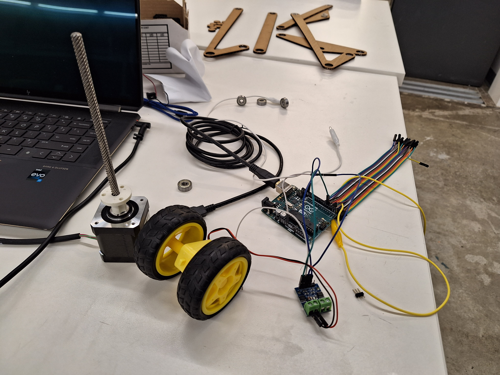
<br>This was the original plan for my final project: the auto-adjusting dropper post. I had changed the method of detecting whether the bike was uphill or downhill to detection via accelerometer. I was planning to attach the accelerometer to the "bike" (the thing with two wheels next to each other, which was going to have a third non-driven wheel at the front, like a Tuk-Tuk). So, the "bike" would need to have a power source attached to its motor, which would need to be driven remotely via ESP32, and would need an accelerometer attached to it relaying information to another ESP32, which would then actuate a stepper motor up and down depending on whether it was going uphill or downhill - it was a lot. So much so that it simply was not feasible to do all this on top of preparing for my final exam for Calc II. I knew I had to change my final project. </br>
<video width="700px" muted autoplay>
<source src="./final_original_video.mp4" type="video/mp4">
</video>
<br>But, before I dropped my original plans, I figured out how to drive a motor based by turning a potentiometer. So, I decided to incorporate into my new plan: to build a stepper motor-driven four-bar linkage, like the ones found on mountain bikes. I decided to use the linkage design I had already come up with (see Project Proposal: Idea 1) </br>
<h1>The New Plan</h1>
<br><b> Coding & Wiring </b></br>
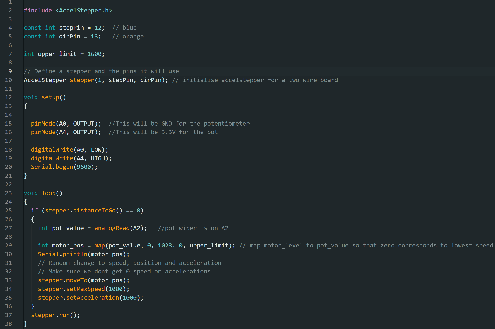
Because the code I made was originally for driving a yellow motor, I needed to change it to fit the stepper motor. To drive a stepper motor, you need AccelStepper code - I copied the AccelStepper code into the first line of my new sketch and specified which pins tell the stepper motor to do what.
<br><b> Coding & Wiring: Things Fall Apart </b></br>
<video width="700px" muted autoplay>
<source src="./final_not_working_video.mp4" type="video/mp4">
</video>
<small><i>Serial monitor was freaking out and the motor driver was running extra hot</i></small>
I mapped the position of the stepper motor to a potentiometer value - the more you twist the potentiometer in one direction, the more the stepper motor moves in one direction. I originally mapped the values incorrectly, so it wouldn't work - I think I wrote (0, 500, 0, 225) at first, because these were the lower and upper limits of the yellow motor. Kassia helped me solve this by letting me know that the upper and lower limits of the stepper motor are probably different, and that I should plug in values to find what they are. After some trial and error, we found those values to be 1023 and 1600.
I remember that another reason that the code wouldn't work was because there wasn't enough power - the motor driver wasn't powerful enough and there wasn't enough current. Kassia suggested that I use the A4988 stepper motor driver instead of the L9110 and wire it according to the diagram on Pololu, which she helped decipher, and connect it to a power source (the sockets in the ground). Thank you so much Kassia - I wouldn't even have a final project if it weren't for you.
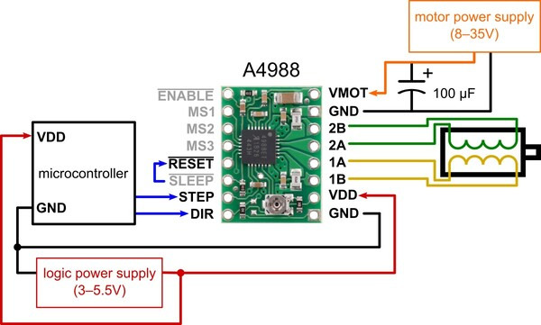
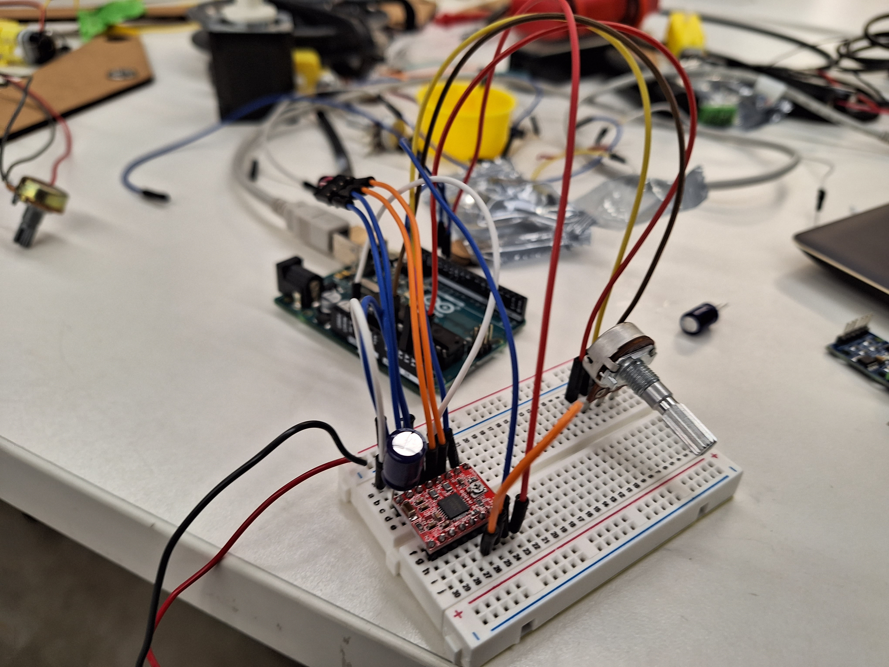
<small><i><br> Wiring of the Pololu diagram IRL with a soldered-on barrel jack so that it can receive a 9V power supply, which would then connect into the ground.</i></small></br>
<br><b> CAD, Laser Cutting, 3D Printing </b></br>
I was planning to make the pieces of my linkage out of laser-cut wood. First, I had to model those pieces in Fusion 360.
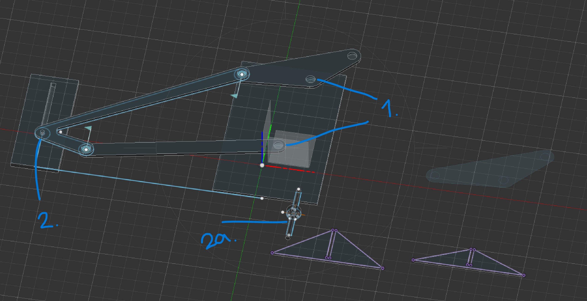
<br>Every pivot on the linkage has a bearing pressed into it so it can rotate. The front of the linkage (1) connected to a board with two bearings pressed it. The board stands on the triangular pressfit pieces, which are projected in purple. The rear of the linkage - specifically where the rear axle would fit through on a real bike (2) - would connect to a plastic insert (2a) that would be attached to the metal part that threads onto the lead screw of a stepper motor. The plastic insert has two rods: one to fit into the rear axle hole of the linkage, and the other to wedge into a wooden insert that would prevent it from rotating laterally so that the lead screw can move the threaded metal piece up and down.</br>
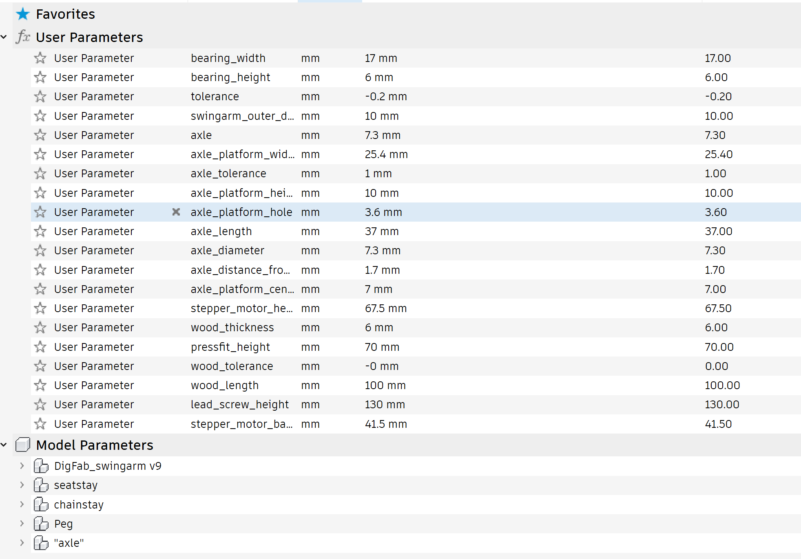
<br>Although it was time-consuming, I parameterized and constrained basically every part of the CAD drawing so that I could have an easier time finding the perfect tolerance for the pressfit bearings when I was making prototypes for the linkage.</br>
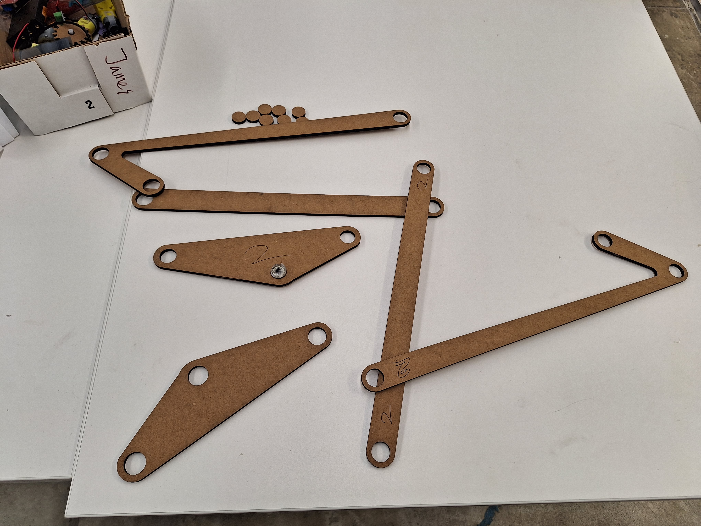
<small><i> On these protos, the pivot points - where the bearings press in - were too big for the bearings. </i></small>
<br>I think parameterizing everything paid off - every time a cut came out unable to fit the bearings (this happened a lot), I could just quickly change the tolerance parameter in Fusion and cut it again.</br>
<br> But, sometimes, you can't just cut things until it's right. After I cut out the wood board that the front of the linkage mounts to as a test, I found that the bearings where the holes press in were too small for the bearings.</br>
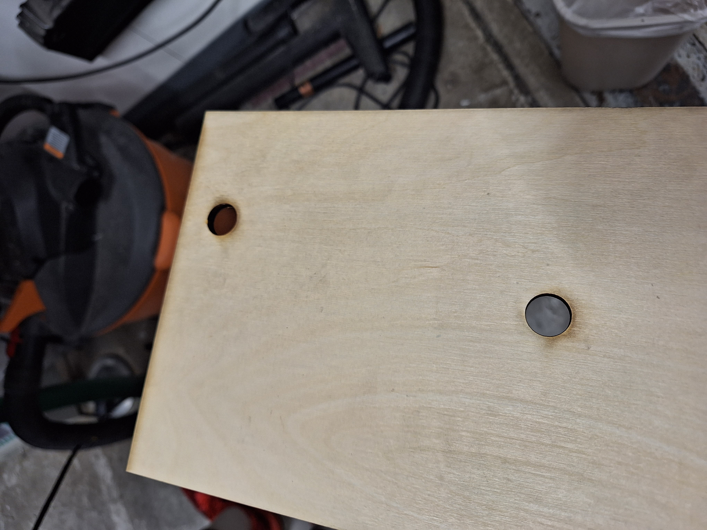
<br>Whereas we have many pieces of cardboard, we only had about a dozen pieces of 6mm wood (we had many more pieces of thinner wood but I couldn't use them - I needed the 6mm wood as it was the only thickness of wood that matched the thickness of my bearings). </br>
<br>I asked Bobby to show me how to use a drill press to make the holes bigger; this way I didn't have to recut the wood. Thank you Bobby!</br>
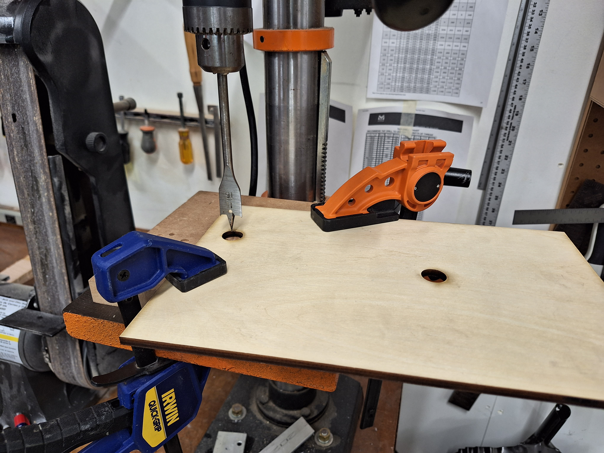
<br>Thankfully, I didn't have the same issue on the next laser cuts as I changed the tolerance parameters for my pivot points to be 0.1mm larger. The bearings pressed in with just the right amount of resistance and never slid out of place. </br>
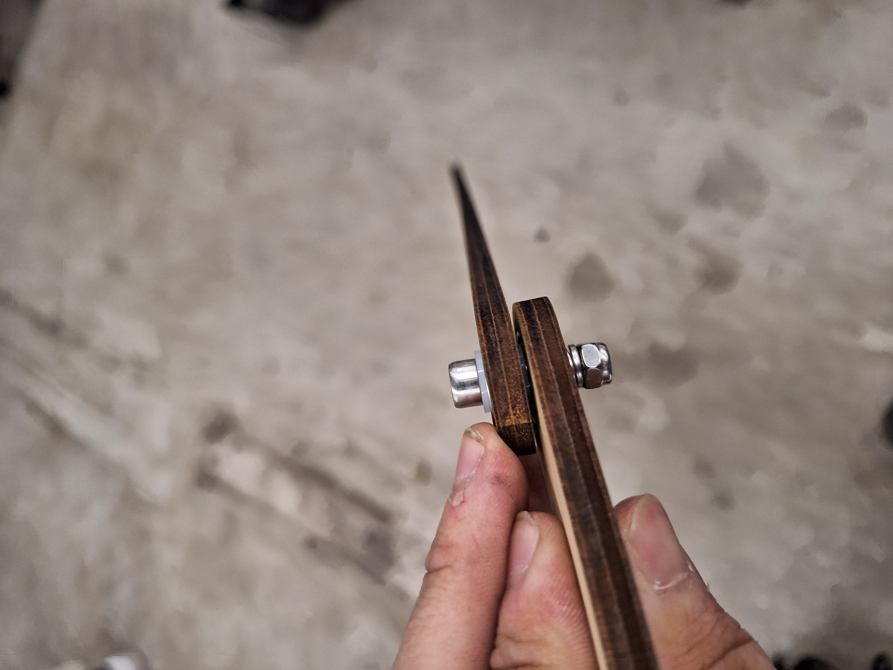
<br><small><i> Things come together at last. I connected the pieces of the linkage together like you would on a mountain bike: M5 bolt, washer, bearing, washer, bearing, two spacer thingies, and a locknut. </i></small></br>
<img src="./final_3d.jpg" width="600px">
<br><small><i> Parameterization also came in handy when making the plastic inserts for the stepper motor. The first didn't have the center hole, the second (black one) had the holes on the side too small, the third was just right. </i></small></br>
<br><b> Putting It All Together </b></br>
<video width="1000" height="600" controls>
<source src="./final_presentation_video.mp4" type="video/mp4">
Your browser does not support the video tag.
</video>
Here are the individual pieces of my final project, which I explain in more detail in the video.
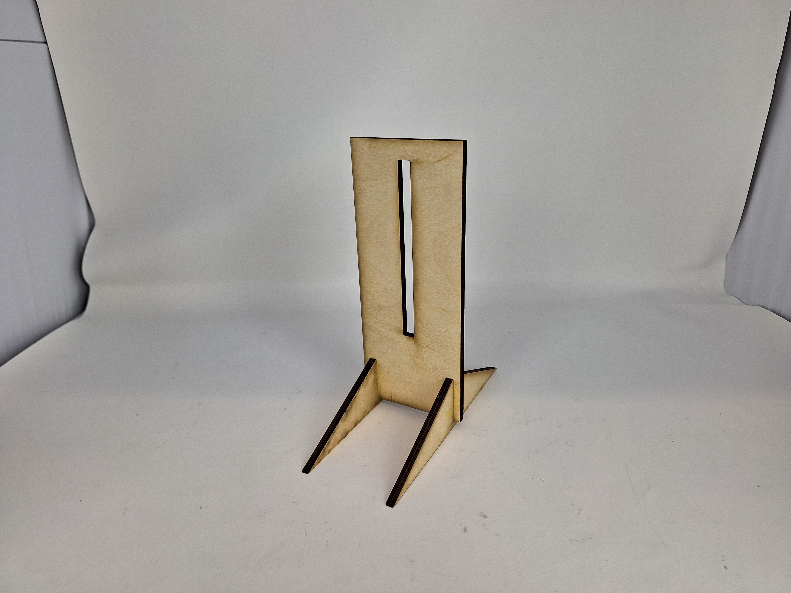
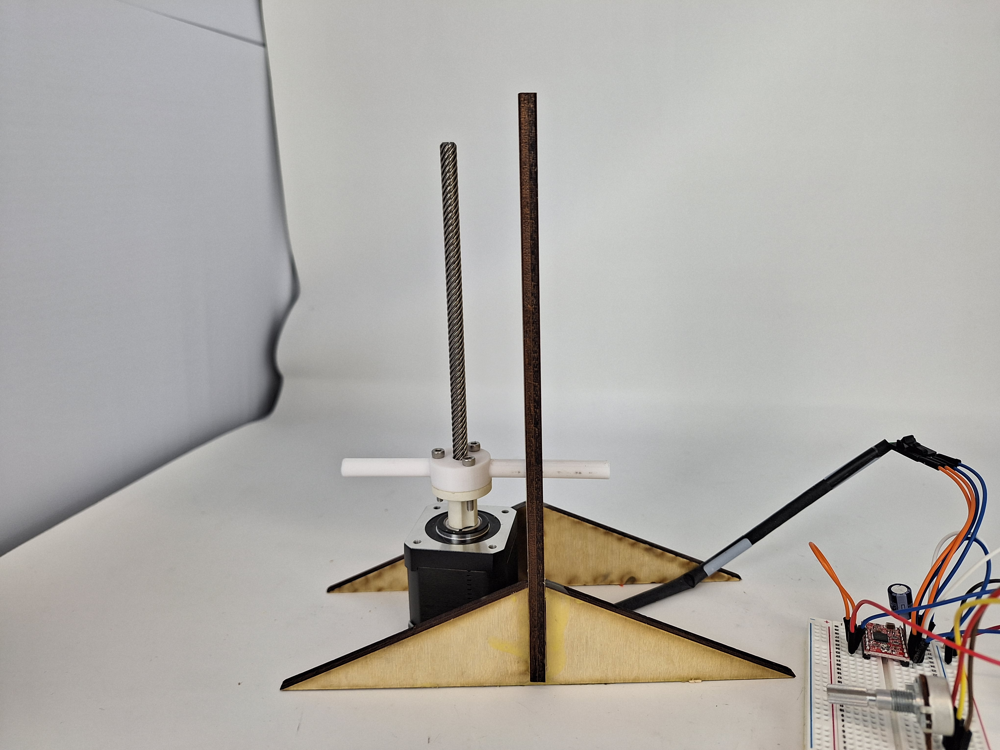
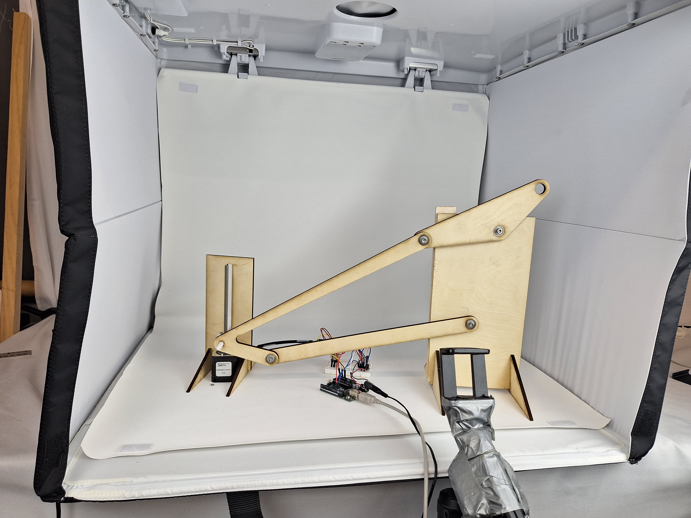